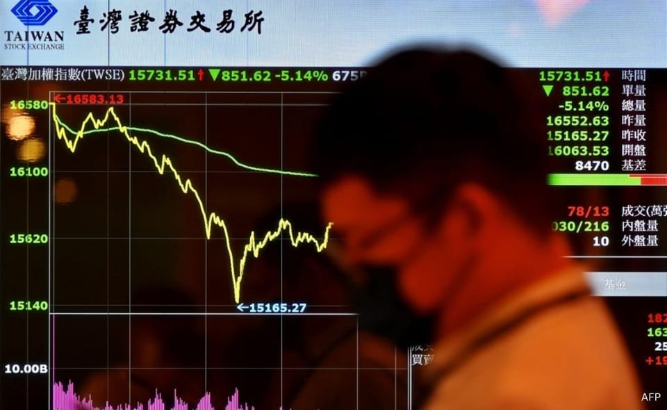

世界苦茶04月07日新闻 | 27条 | 亚洲股市迎来黑色星期一

亚洲股市迎来黑色星期一 | 台湾、印尼、印度放弃对美关税报复 | 马斯克批评特朗普亲信纳瓦罗 | 微软旗下合资公司关停中国业务
透明茶室
苦茶数据
美元兑人民币：7.31（昨日7.29，前日7.29）
美元兑日元：145.29（昨日145.53，前日145.45）
上证指数：3108（昨日3342，前日3333）
标普500指数：休市（昨日5074，前日5396）
比特币：74933（昨日83429，前日83695）
布伦特原油：63.27（昨日65.58，前日69.34）
中国新闻
• G7促台海和平对话 ：七国集团指中国大陆近日在台湾周边的军事演习具有挑衅性和破坏性，呼吁通过对话“和平解决问题”。路透社报道，加拿大、法国、德国、意大利、日本、英国和美国外交部长以及欧盟高级代表，星期天发表联合声明说：“这些日益频繁和破坏稳定的活动加剧了两岸紧张局势，并危及全球的安全和繁荣。“七国集团成员国继续鼓励通过建设性的两岸对话和平解决问题。”
• 中国启动绿剑护粮安行动 ：中国农业农村部部署开展2025年“绿剑护粮安”执法行动，以打击坑农害农、危害粮食安全和农产品质量安全违法行为。据农业农村部官网4月1日消息，农业农村部近日印发《农业农村部关于开展2025年“绿剑护粮安”执法行动的通知》（简称《通知》），部署开展“绿剑护粮安”执法行动。《通知》称，各地要聚焦农资质量、农产品质量安全、动植物检疫、畜禽屠宰等重点领域，严厉打击制售假劣农资、种子套牌侵权、违法使用禁限用药物等坑农害农、危害粮食安全和农产品质量安全违法行为，保障粮食和重要农产品稳定安全供给，维护农民群众合法权益。
• 中方警告驱离日渔船 ：中国海警局称，日本渔船4月5日至6日非法进入钓鱼岛领海，中国海警舰艇对其采取必要管控措施并警告驱离。据“中国海警”微信公众号消息，中国海警局新闻发言人刘德军说，4月5日至6日，日本“鹤丸”号渔船非法进入钓鱼岛领海，中国海警舰艇依法对其采取必要管控措施并警告驱离。刘德军说，钓鱼岛及其附属岛屿是中国固有领土，敦促日本立即停止在该海域的一切违法活动。中国海警将持续在钓鱼岛领海内开展维权执法活动，维护国家领土主权和海洋权益。
• 刘天然被调查半年 ：知情人士说，刘鹤之子刘天然被监察调查，迄今已逾六个月。当局是在调查蚂蚁集团IPO案件时发现了刘的涉案线索，经审查还发现了其他腐败问题。金融时报2021年5月报道，刘天然早年是《经济观察报》记者，后去建银国际工作，又去了上海一家政府基金。2016年创办股权投资基金“天壹紫腾”。因领导干部子女合规要求，2017年4月辞去主席职务并退出股份，但仍在为其服务，在京东健康、京东物流、腾讯音乐等投资案中发挥了核心作用。
亚太印太新闻
• 东京巴士事故47人受伤 ：日本东京发生旅游巴士追撞事故，造成47名乘客受伤，大部分伤者为外国游客，但他们都没有生命危险。共同社报道，事发于星期六早上10时15分，两辆旅游巴士在东京都八王子市中快速公路的小佛隧道入口处连环撞。当时两辆巴士正从东京开往知名景点。前方的旅游巴士因交通堵塞停下，后方巴士疑似煞车不及，直接撞上，导致乘客受伤。涉事旅游巴士上的乘客包括来自台湾、香港、马来西亚和新加坡的游客，他们都是参加旅游平台KKday推出的“富士山一日游”行程。
• 平壤国际马拉松重启 ：朝鲜阔别六年举办平壤国际马拉松赛，特别开放边境给多名外国选手。朝鲜官方媒体朝中社报道，来自中国、罗马尼亚、摩洛哥和埃塞俄比亚的运动员于4月3日至5日乘飞机抵达平壤，参加星期天举办的第31届平壤国际马拉松比赛。这场马拉松比赛是朝鲜规模最大的国际体育赛事。比赛也为游客提供一个难得的机会，让他们可以穿过严密控制的首都街道。
• 黄国昌批赖政府应对失策 ：台湾在野的民众党主席黄国昌批评，行政院长卓荣泰在美国宣布关税前一天，还要民众安心入睡，并指面对美国关税这么重大的问题，“整个赖政府的团队，从头到尾都在睡”。综合《联合报》、风传媒、Newtalk新闻等报道，黄国昌星期天出席民众党活动前受访说，美国总统特朗普宣布对台湾课征32%这么高的关税，而真正让人遗憾的是，从此次事件能清楚看出，整个赖清德政府团队，连最基本的正确资讯都没办法收集到，更没有对美谈判的任何具体的策略，“所以看出来是完全没准备”。黄国昌进一步批评，卓荣泰在特朗普宣布关税前一天晚上，还要台湾民众安心入睡，“结果没想到整个台湾社会发现，整个赖政府的团队，从头到尾都在睡”。
• 韩国议长提修宪公投 ：韩国国会议长禹元植星期天在国会举行紧急记者会，提议在即将举行的总统选举日同步举行修宪公投。韩联社报道，禹元植说，历届大选几乎所有主要总统候选人都曾承诺推进修宪，但真正付诸行动的仅有一次。由于各党派在权力结构改革等关键议题上分歧较大，导致修宪议程难以推进。禹元植强调，通过分权实现国民主权和国家团结，是当前时代赋予政治体制改革的新使命。现在正是推动修宪的最佳时机，应在新一任总统就职前推进修宪进程。
• 台湾民团呼吁关闭中正堂 ：今年是蒋介石逝世50周年，有台湾民间团体星期六发起“台湾真的不需要独裁者纪念堂”行动，呼吁政府今年择期关闭中正纪念堂堂体。综合《自由时报》和民视新闻网报道，519行动组合、辜宽敏基金会星期六在中正纪念堂堂体阶梯发起“台湾真的不需要独裁者纪念堂”行动。现场近百名政治受难者及家属手举标语、高喊口号。辜宽敏基金会董事长王美琇致词时说，他们聚集在中正纪念堂是要告诉社会大众，如果“独裁者纪念堂”继续存在，就是对所有政治前辈与家属最大的羞辱，也是对民主价值的最大羞辱。她说，台湾的民主自由在亚洲地区名列前茅，怎么一方面歌颂台湾的民主自由，另一方面却在台北市中心用这么大的纪念堂供奉一个“独裁者”，并质问台湾要传达给世界及后代子孙什么样的价值错乱。
科技新闻
• Meta发布Llama新模型 ：脸书母公司Meta推出两款大型语言模型Llama最新版本，与其他同类人工智能科技竞争。根据路透报道，Meta Platforms在星期六发布Llama 4 Scout和Llama 4 Maverick两款新版本。Llama是一种多模态人工智能系统。多模态系统能够处理和整合各种类型的数据，包括文本、视频、图像和音频，并且可以转换成不同格式。
• 以色列开发AI细胞分析系统 ：以色列特拉维夫大学研究人员开发出一种基于人工智能的scNET系统，能深入了解细胞在肿瘤等复杂生物环境中的行为变化，有望为疾病治疗研究提供新途径。新华社报道，以色列特拉维夫大学近日发布公报说，当前单细胞测序技术日益成熟，使研究人员能观察生物样本中不同细胞群体的基因表达特征，并探索其对个体细胞功能的影响。在肿瘤环境中，这种研究尤其重要，既可以观察治疗对癌细胞本身的作用，也能分析其对肿瘤周围促癌或抗癌细胞的影响。
财经新闻
• 亚太市场4月7日集体大跌。截至发稿，香港恒生指数跌超12%，上证指数跌8%，日经225指数跌超7.8%： 美国总统特朗普4月6日坚称其不会在关税问题上退缩，除非各国实现与美国的贸易平衡。美国财政部长贝森特表示，已有50多个国家开始与美国谈判。
• 特朗普官员力挺关税 ：在美国总统特朗普首波对等关税生效后，他的多名高级经济官员驳斥投资者对通胀和衰退的担忧，对关税引发全球市场动荡毫无歉意，并坚称美国即将迎来繁荣。彭博社报道，全球股市接连两天大幅下跌，美国财政部长贝森特、商务部长卢特尼克等人星期天强调，无论市场如何变化，特朗普都会坚决推动他的关税议程。卢特尼克在哥伦比亚广播公司的《面向全国》节目中说，“关税即将到来”，特朗普的宣布“不是玩笑话”。
• 越南首季经济增长放缓 ：星期天公布的数据显示，面临美国高额贸易关税压力的越南，今年首季经济增长放缓。路透社报道，越南国家统计局发布报告说，今年第一季度，越南国内生产总值较去年同期增长6.93%，低于去年第四季的7.55%。首季报告也显示，美国仍为越南的最大出口市场，越南对美贸易顺差同比增长22.1%，达273亿美元。
• 越南请求推迟关税 ：越南共产党总书记苏林要求美国将原定于4月9日开始向越南征收的46%关税，“推迟至少45天”。据法新社星期天看到的一封签名信函副本显示，苏林在信中呼吁美国总统特朗普指派一名代表与越南副总理胡德福合作解决关税问题。苏林也说，他希望5月底在华盛顿亲自会见特朗普。
• 赖清德表态不报复 ：台湾总统赖清德星期天发表录影谈话，表明台湾没有计划针对美国对等关税措施，采取关税报复，并誓言透过谈判，全力争取改善对等关税。根据台湾总统府官网发布的谈话内容，赖清德坦言美国政府以对等为名，宣布对世界各地加征关税，台湾也名列其中，加征32%，这势必对台湾造成重大影响。台湾是外贸导向的地区，面对未来的挑战，举步必然维艰，必须步步为营，才能转危为安。“面对美国的‘对等关税’，台湾没有计划采取关税报复。”赖清德说，台湾要积极掌握全球经济情势的变化，加强台美产业合作，提升台湾产业在全球供应链的地位，在维护台湾经济持续发展的目标下，采取五项策略来应变，其中一项是透过谈判，全力争取改善对等关税。
• 印尼拒绝报复美国关税 ：印度尼西亚经济事务统筹部长艾尔朗加说，印尼不会对美国总统特朗普对印尼征收32%的贸易关税进行报复。路透社报道，艾尔朗加星期天首次对美国征收关税作出首次回应。他发声明说，在特朗普星期三宣布全面征收全球关税后，印尼将通过外交和谈判寻求互利解决方案。
• 印度将专注于贸易协议，避免对美国关税进行报复： 据一位印度政府官员称，印度不太可能立即对唐纳德·特朗普总统征收的关税进行报复，而是专注于与美国谈判双边贸易协议以降低关税。这位官员说，这个南亚国家正在寻求对话而不是对抗，并补充说，与该地区的竞争对手相比，印度拥有先发优势。这位官员说，印度计划努力与美国达成一项平衡、公平的贸易协议。据这位官员称，所有选项都可以谈判，商品和服务都将得到讨论。政府还与出口商就预期影响进行了联系，如果他们联系，政府将提供帮助。
• 马斯克倡议零关税区 ：美国总统特朗普的亿万富豪盟友马斯克表示希望美国和欧洲建立“零关税”制度，并建立“自由贸易区”。特朗普首波对100多个贸易伙伴征收10%最低基准关税的政策，星期六正式生效，美国的许多盟友包括欧盟亦无法幸免。综合路透社和彭博社报道，马斯克星期六以视频连线，在意大利极右翼联盟党联邦代表大会上，与联盟党党魁、意大利副总理萨尔维尼进行对话。 （翻评：这里的关键是马斯克大骂批判纳瓦罗的观点。）
• 微软旗下合资公司微创关停中国区业务： 4月7日，今日有消息称微软公司将调整全球战略布局，并于4月8日起正式停止在中国区的运营。从微软内部人士处了解，该业务为微软公司旗下合资公司微创，定位为企业数字化综合服务商，“行业里普遍叫微软的外包公司”。一位办公区在上海的微创员工对此表示，早上刚到公司就被宣布和微软相关的所有业务都被暂停了，“突然公司里几百人被通知没有工作了”，由于本次变动涉及全国各个城市，据其和内部同事粗略统计，本次变动或涉及近2000人，目前公司给其提供的裁员补偿为N+1。另一位无锡的员工则表示，“无锡这边大概有三层楼，涉及1000多个员工，也是赔偿N+1，直接签合同走人。”
俄乌战争
• 俄美或下周再接触 ：一名参与华盛顿谈判的俄罗斯高级官员透露，俄美可能最早在下周再次接触。据塔斯社报道，俄罗斯国际经济和投资合作特使德米特里耶夫星期天接受俄罗斯第一频道电视台采访时说，双方下一次接触可能就在“下周”。他告诉俄罗斯记者，他看到两国关系中的“积极动态”。
• 据空军报道，俄罗斯夜间向乌克兰发射了 23 枚导弹和 109 架无人机： 据乌克兰空军报道，4 月 6 日夜间，俄罗斯军队向乌克兰发射了 23 枚导弹和 109 架无人机。据空军在 Telegram 上报道，夜间袭击的目标是基辅、苏梅、哈尔科夫、赫梅利尼茨基、切尔卡瑟和尼古拉耶夫州。基辅当地政府上午报告称，一人死亡，三人受伤。据空军称，乌克兰击落了向该国发射的九枚 Kh-101、Kh-55 和 Kalibr 巡航导弹中的六枚，八枚 Kalibr 巡航导弹中的六枚，以及六枚 Iskander-M 弹道导弹中的一枚。俄罗斯空军称，在向乌克兰发射的 109 架无人机中，已击落 40 架“沙希德”战斗无人机，另有 53 架诱饵无人机从雷达上消失，没有造成任何损害。
其他新闻
• 以色列拒绝英议员入境 ：英国外交部长拉米说，以色列拘留两名英国议员，并拒绝他们以英国议会代表团成员身份入境。综合法新社和路透社报道，拉米星期六晚间说，以色列拘留两名英国议员是不可接受的。天空新闻引述以色列移民部的一份声明称，被拘留的议员是英国工党议员杨缘和阿布蒂萨姆·穆罕默德，他们被拒绝入境是因为两人涉嫌计划“记录以色列安全部队活动并传播反以色列仇恨”。
• 教宗方济各公开露面 ：教宗方济各出院两周后首次公开露面，在梵蒂冈向人群致意。路透社报道，方济各星期天坐着轮椅进入梵蒂冈圣彼得广场，与民众打招呼。当天正举行病人和医护人员禧年弥撒。方济各鼻子插有氧气管，但他仍用虚弱的声音简短地发表讲话：“祝大家星期天快乐，非常感谢。”
• 渥太华国会山突发事件 ：一名男子闯入加拿大首都渥太华的国会山，警方封锁区域调查长达约八小时，终于拘捕男子。这起事件发生在星期六下午3时左右。据加拿大媒体报道，一名男子将自己“锁”在国会山东区建筑内。事发后，国会山东区内人员被疏散。有参议员在社交媒体平台上转发议会保护局封锁通知，议会保护局在事发后立即要求国会人员到附近的房间藏身。
• 加拿大发布美边境警告 ：加拿大政府向入境美国的民众发布新旅游警告，提醒他们要有心理准备在美国边境海关受到严格检查，还说他们的手机和其他电子设备可能被搜查。彭博社报道，加拿大此次更新的旅游警告，是在美国总统特朗普收紧边境与移民政策后发布的。此前，英国、德国和法国等国家已发布类似旅游警示。加拿大政府说：“在与边境当局互动时，谨记遵守规则并保持坦诚。如果你被拒绝入境，有可能在等待驱逐出境时被拘留。”
• 伊朗拒绝与美直接谈判 ：伊朗外交部长阿拉格齐拒绝与美国进行直接谈判，并称这是“毫无意义”的。法新社报道，阿拉格齐星期天说：“与一个不断威胁动用武力、违反《联合国宪章》、并且各官员说法前后矛盾的国家进行直接谈判是毫无意义的。”阿拉格齐也说：“我们仍然致力于外交，并准备尝试间接谈判的方式。”